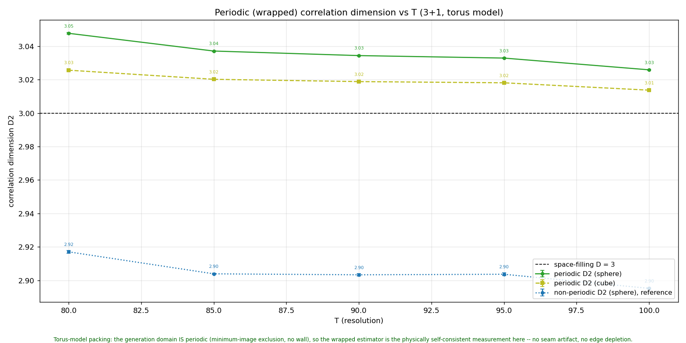
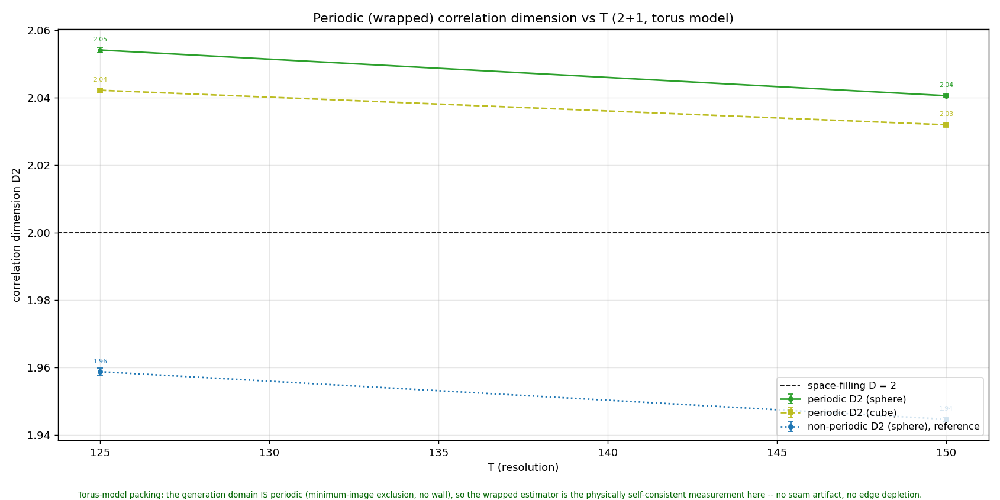

Full-spectrum geometry cross-checks: 2.53 is a packing-number exponent too, and the D₂ deficit is invisible to every coarse probe
Re-run of the geometric-dimension-vs-scale, 4D bundle box-count, and
uniformity-over-time analyses on the FULLSPEC T = 100 dumps
(3 seeds, no new campaign) · multi-term trajectory
reconstruction
ad6968b
Kevin asked for the two classic geometry charts — the
pooled/snapshot local box-dimension sweep and the in-universe
uniformity trace — repeated on the full-spectrum (terms = T)
ensemble, to see what the ~3% wrapped-D₂ deficit (lab note
07-25) looks like through them. The three scripts reconstructed
trajectories from the legacy single-wiggle columns only; they now
share the per-term loader (comoving_trajectories in
braidlab/corrdim.py), regression-identical on legacy
dumps.
Geometric dimension vs scale, fullspec T = 100. As in the
baseline (07-02 chart): no plateau at the count exponent —
2.53 is a packing-number exponent, not a geometric
dimension of any cloud the packing produces. One visible fullspec
difference: the pooled bundle already reads ~2.1 at the finest
scale (vs ~1.3 for the baseline), because ~T-term worldlines are
far wigglier — individual curves stop being resolvable almost
immediately.
The 4D (x, y, w, z) bundle, both z scalings: local D
sweeps ~1 → 4, crossing 2.53 near scale 0.06 without
a plateau — same conclusion in 4D as in 3D.
In-universe uniformity vs conformal time, fullspec
T = 100: flat across the whole loop. The rms comoving
spread sits at 0.5773–0.5775 — the exact homogeneous
value √⅓ = 0.57735.
The steeper exponent has no geometric carrier
either. Local dimension sweeps fine → coarse
(0/1 → 3 in 3D, → 4 in 4D) crossing 2.53
only in passing, exactly as the baseline's charts did for 2.33.
The full-spectrum steepening is a change in how the
across-time exclusion suppresses the achievable count,
not the appearance of a fractal structure.
The D₂ deficit is not a uniformity defect any
coarse probe can see. Slices are statistically identical
at every conformal time; the rms comoving spread is pinned at the
exact homogeneous √⅓ to 4 decimals, flat over the
loop; the slice box-dimension trace is flat (2.52–2.60,
same coarse-window band the baseline reads). Whatever the ~3%
wrapped-D₂ shortfall is, it lives in same-slice pair
correlations below the coarse window — second moments and
box occupancy are exactly homogeneous. The larger-T probe
(fullspec3d_e6ext2 T = 110/120, fullspec2d_e6ext
T = 125/150, running) will say whether it closes with
cloud size.
The “~3% D₂ deficit” resolved: an unwrapped-estimator artifact shared by the baseline — full-spectrum slices are exactly uniform
Wrapped (minimum-image) correlation dimension on the FULLSPEC top
rungs (3+1 T = 80–100 × 8 seeds, 2+1
T = 125/150 from the new fullspec2d_e6ext store) + the
matched-estimator baseline control (pack2d_e6) · no new code
— analysis/analyze_periodic_corrdim.py as-is on
the multi-term loader from
ad6968b
The 07-25 note reported fullspec wrapped D₂ ~3% under the space
dimension and left it open. Two controls close it. First, the
baseline terms = 2 model, measured with the same
braidlab corrdim estimator that produced the fullspec
numbers, reads 1.93–1.96 at its own ladder top —
statistically identical to fullspec's 1.94–1.97. The deficit
was never fullspec-specific. Second, that estimator loads clouds
unwrapped (open boundary, edge depletion); the genuinely
periodic minimum-image estimator — the self-consistent
measurement on the torus, and the one behind the README's baseline
3.01/2.02 — reads, on fullspec:

3+1: wrapped D₂ = 3.05 → 3.03 (sphere) /
3.03 → 3.01 (cube) over T = 80–100,
converging to 3 from above — the same signature as the
baseline's 3.01. The unwrapped reference (gray) shows the ~0.1
edge-bias gap that produced the spurious deficit.

2+1 twin (T = 125/150 from the deficit-probe extension):
wrapped D₂ = 2.05 → 2.04, converging to 2 from
above.
Verdict: exact uniformity carries over to the
full-spectrum model. Wrapped D₂ converges to the
space dimension from above in both dimensions, precisely as the
baseline does. README, PHYSICS_FINDINGS §12, and the open
question have been corrected; the 07-25 deficit claim is
withdrawn.
Estimator lesson.braidlab corrdim
measures unwrapped clouds; on a torus-model packing its
open-boundary edge depletion depresses D₂ by ~0.1 (3+1) /
~0.07 (2+1) at these N, for every model. Cross-model
uniformity comparisons must use the periodic estimator.
Still running. fullspec3d_e6ext2
(T = 110/120) now serves the exponent-plateau question
only; its wrapped-D₂ points will be added as further
confirmation when it lands.